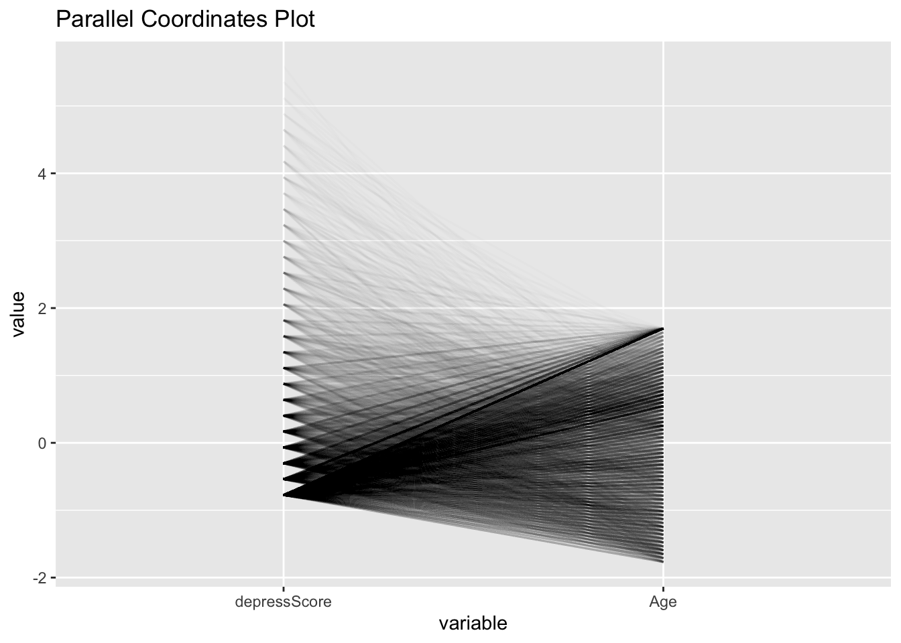

ggplot(merged_info, aes(Income)) +geom_histogram(aes(y=after_stat(density)), color ="blue", fill ="cornflowerblue", alpha =0.5) +geom_density(lwd=1.25) +labs(title ="I/P Ratio Distribution",x ="Ratio of family income to poverty", y ="Density") +theme_minimal()
3.3 Plot3
Code
ggplot(merged_info, aes(x=Income, y=depressLevel, fill = depressLevel)) +geom_density_ridges(scale=0.75) +geom_boxplot(width =0.3, alpha =0.7) +theme(legend.position ="none") +labs(title="I/P Ratio horizontal boxplots and ridgeline plots vs. Depression Level",x="I/P Ratio", y ="Depression Level")

3.4 Plot4
Code
ggplot(merged_info) +geom_hex(aes(x = CaffConsump, y = depressScore), bins =10) +labs(title ="Square Heatmap of Bin Counts",x ="Caffeine Consumption",y ="depressScore")
3.5 Plot5
Code
library(forcats)ggplot(merged_info, aes(x=fct_infreq(Race), fill = Gender)) +geom_bar() +ylab("Count") +xlab("Race") +ggtitle("Frequency of Race by Gender")